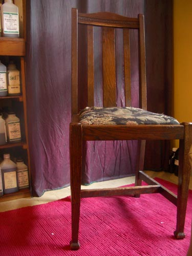
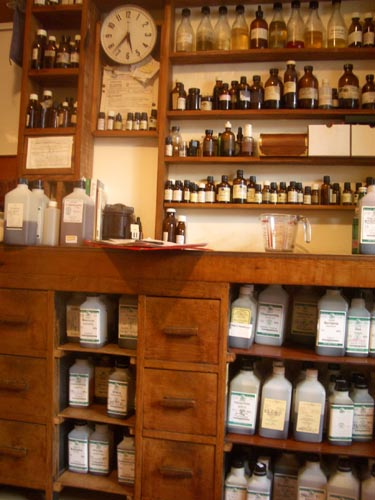
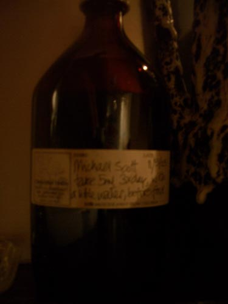

| < | > |
| North London Herbalist | [2005-05-12 09:13] |
| i don't talk much about my ailments on here because hey discomfort pain it all passes and is forgotten - but for the last couple of months i've been plagued with farts wind gas old man's rumbling stomach - i've been to the official doctors and they did all the tests and i passed fit and healthy - not dying that's good - but still somethings got to to be done - so joao found me a herbalist in north london - a tall gangly man with a wild bush of white hair - about my age - in socks - and shiny red hands - he sat here  i sat on a lumpy old couch and retraced my health history as best as i could remember it - i'm not very good at that - present moment or nostalgia sort of guy - eventually he did a little test - shuffled off to the kitchen and came back with a little white plate with a little pile of wheat and one of yeast on it - put a sprinkling of each in turn on my upturned palm and swung a pendulum over it - wheat was ok - pendulum circled nicely round - yeast was bad - pendulum side to side - stranglely i was ok with this rose crystal stuff - we were in the middle ages after all - after i left i rationalized that the swing diagnosed his thought not my condition - it showed him what was in his mind - so anyway yeast free diet for me for a month - time to prepare the concoction of tinctures  i got a big brown bottle of herby tasting brown liquid laced with alcohol - 20 minutes before food  we made an appointment for me to come back in a month - "oh no it can't be that day i'm taking a group of herbalists to the chelsea physic garden - the plants don't get to see enough herbalists - it's lonely for them" - ah life is full of such adventures |
|
|
|